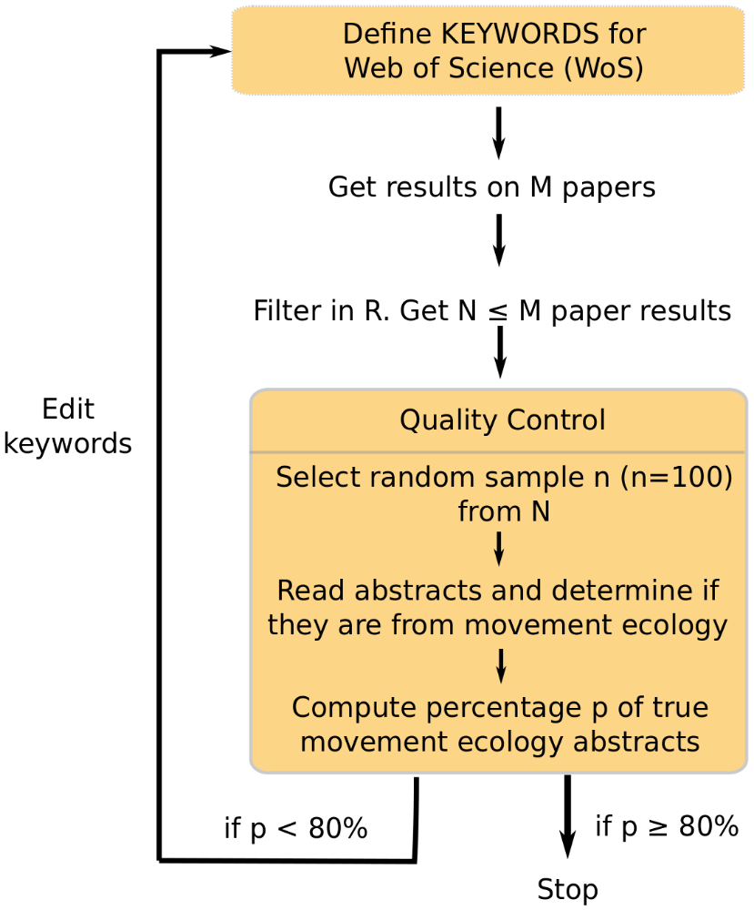
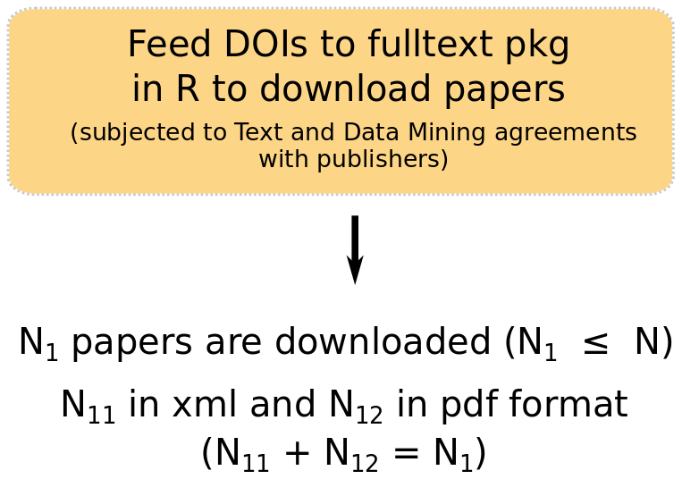
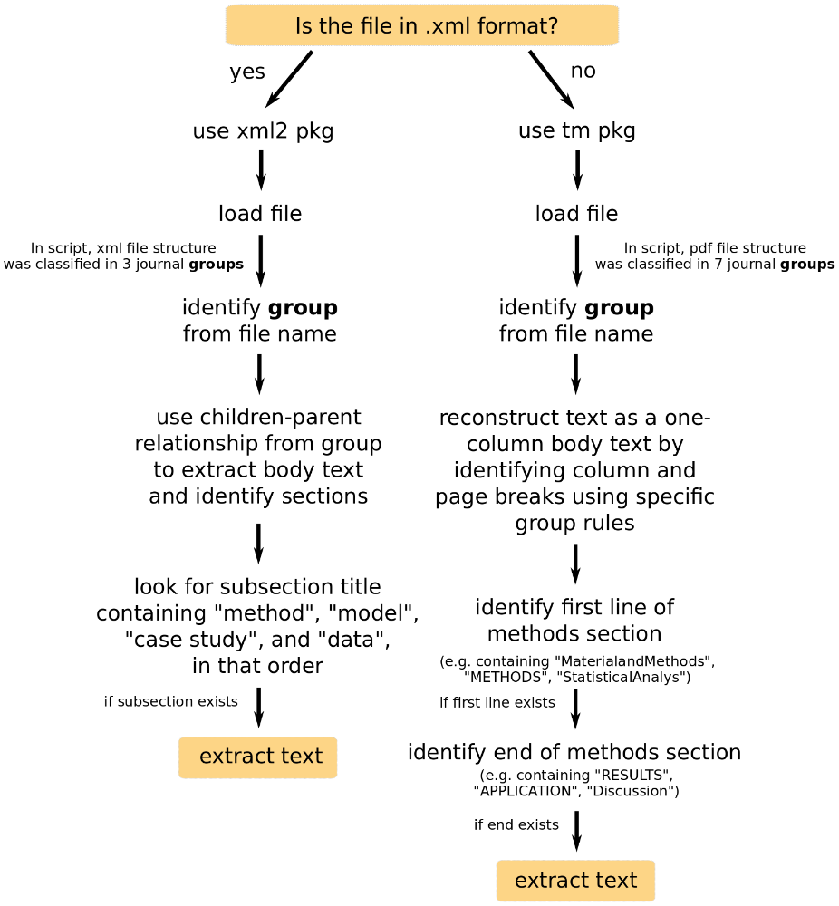

2 Data collection and processing
2.1 Identification of movement ecology (mov-eco) papers

Workflow to identify movement ecology papers.2.1.1 What is a movement ecology paper?
We defined mov-eco papers as scientific peer-reviewed papers that studied the voluntary movement of one or more living individuals. This included humans.
2.1.2 Search keywords
We used Web of Science (WoS) as a search engine for the papers.
We defined mov-eco papers as scientific peer-reviewed papers that studied the voluntary movement of one or more living individuals. This included humans.
Very few papers mention “movement ecology” in their abstracts, so we did not use “movement ecology” as a search phrase. After much testing, we came up with the following groups of words:
- Group 1 - Behavior: behavio
- Group 2 - Movement: movement, moving, motion, spatiotemporal, kinematics, spatio-temporal
- Group 3 - Biologging: telemetry, geolocat, biologg, accelerom, gps, geo-locat, bio-logg, reorient, vhf, argos, radar, sonar, gls, vms, animal-borne
- Group 4 - Individuals: animal, individual, human, person, people, player, wildlife, fishermen
Paper abstracts had to have words from at least 3 of the groups above to be selected. An initial search revealed these keywords to pick up papers from a variety of fields such as biochemistry, medicine, physics and economics. As such, unless they had words from group 3, paper abstracts could not contain the following words:
- Group 5 - Missleading words: cell, DNA, enzyme, strain, neurons, atom, molecule, lymph, cortex, cortic, neurotransmi, patient prosthese, eye, particle, tectonic, counsel, cognit, market, spine, questionnaire, sendentary, insulin
The search on WoS was made over a final selection of 273 journals; made in parallel with keyword tunning.
2.1.3 Cleaning and filtering results in R
The grouping criteria were applied to the Topic field in WoS, which searched the
Title, Abstract, and Keywords sections. We downloaded the search results from
WoS, which contain information on title, keywords, abstracts and authors, among
others. We downloaded all references in raw .txt format as it was the valid
input for the refsplitr package available for R (R Core Team (2018)) on github
(https://github.com/ropensci/refsplitr) (Fournier et al. (2019)). Refsplitr reads in
multiple WoS files, parses addresses, and performs author matching. We used the
references_read function to compile the .txt files into one data sheet. To be
sure that the papers shown in our search in WoS were respecting our search
criteria for the abstracts, we applied the same filters described above to the
downloaded search results via R. In addition to the grouping criteria we
filtered by Document Type to only allow ‘Articles,’‘Proceedings Papers,’ and
‘Reviews.’ This process yielded 8007 papers. The code can be downloaded
here.
2.1.4 Quality control
From the cleaned results, we took a random sample of 100 papers (i.e. with title, abstracts and other features taken from WoS). We then read the abstracts and classified them into “mov-eco” and “not mov-eco.” If the percentage of mov-eco papers (i.e. precision) was lower than 80%, the word criterion used for the search would be improved (e.g. adding more words, editing some, changing the rules for the groups). This is how we came up with the groups introduced above (section 2.1). We obtained 90% of precision. That means that, from the papers that we had, almost all of them were mov-eco papers.
We also wanted to obtain a recall or sensitivity rate to quantify, from all mov-eco papers in the literature, how many we had in our search results. As it is impossible to obtain the “real” list of mov-eco papers in the literature, we instead looked at the list of papers published by the journal Movement Ecology. We found that 69% were in our list. An estimated sensitivity of 69% and precision of 90% implies that though we did not get the whole population of mov-eco papers in our set, there is a high certainty that those obtained are mov-eco papers.
2.1.5 Possible biases
We have no reason to believe that our search criteria have introduced biases to our results. The relatively short list of words is due to the fact that other words we tried were actually reducing our precision, providing us many papers that were not about movement ecology. Of course, it is always possible that we forgot to try an important word. A possible bias could come from WoS: we were not able to get papers that were not in WoS, which depends on WoS agreements.
2.1.6 Differences with other approaches selecting and analyzing mov-eco papers
Holyoak et al. (2008): Their goal was to find papers about movement of organisms or gametes, so their definition of movement ecology was somewhat broader than ours. We were inspired by their procedure, and tried the terms that they showed in the paper that would be consistent with our definition of mov-eco. Like us, they used WoS to build their literature dataset. They had a two-step criterion to select the papers. First, they screened the WoS for papers that contained their keywords. Then, they narrowed down the selection by excluding non-ecological journals from their initial results. Two of their coauthors decided on a list of 496 journals. We applied a similar procedure but using a modified set of keywords because we found their criteria to be too broad for our definition, and then two coauthors (R.J. and S.P.) decided on 273 journals. Among the remaining articles, they selected a random sample of 1000 papers for quality control, rating them as relevant or not. Their overall success rate (similar to our precision) was 77%.
Fraser et al. (2018): They also used the WoS. In “Topics,” they searched for “ecology” and either “movement,” “migrat,” “home range,” “dispersal” or “track.” Their combination of words was too vague in our opinion, and they did not mention any quality control (e.g. precision, recall, specificity, sensitivity) statistic.
2.2 Downloading whole manuscripts

Downloading movement ecology papers.We used the fulltext package (Chamberlain (2019)) in R, using Elsevier, Springer, Scopus, Wiley, BMC and PLOS one API keys. We downloaded the articles we had access to, as xml or pdf documents. We downloaded a total of 4060 complete manuscripts, representing 51% of our list of mov-eco papers. The codes to download papers can be downloaded clicking on this link.
2.3 Extracting the Material and Methods (M&M) sections

Summary of procedure to extract Material and Methods section from each paper.For some analyses (section 3), we needed the Material and methods
section of the manuscripts. We created codes for .xml (click to
download) and .pdf (click to
download) files. The former was built using the functions
of the xml2 package (Wickham, Hester, and Ooms (2018)). The later calls the readPDF and Corpus
functions from the tm (Feinerer and Hornik (2018)) package. In order to write the codes, we took
account of the structure of the papers in either format, and aimed at finding
section names related to “Methods,” “Data” or “Statistical Analysis.” Not all
papers had an M&M section (e.g. reviews or perspective papers). We were able to
extract 3674 M&M sections (46% of mov-eco paper results and 90% of fully
downloaded papers).